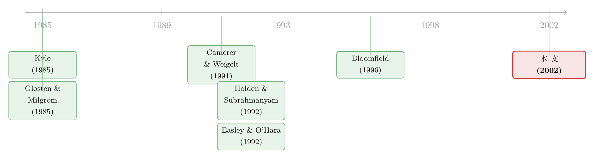

没人知道屋里到底有几个内幕者，价格还能信吗？
本文读的是 Schnitzlein (2002, Review of Financial Studies)：把市场微观结构里一个几乎人人默认、却几乎从不被检验的假设——「所有人都知道场内有几个内幕者」——搬进实验室，亲手把它拿掉。结果是，一旦内幕者的人数和在场与否需要靠猜，内幕者就学会了用「下单的时机」和「下单的大小」互相打掩护：他们故意拖延、故意把大单往后放，让做市商分不清今天到底有没有人知情。于是 Kyle (1985) 那套「竞争越激烈、价格收敛越快」的漂亮直觉，在更接近真实的环境里基本失灵，价格效率被显著拉低。
1 一个被悄悄塞进模型的假设
先讲一件几乎所有读微观结构的人都见过、却很少停下来追问的事。
打开 Kyle (1985) 的连续拍卖模型，内幕者的最优策略里有一个关键输入：有几个内幕者在和我竞争。竞争者越多，每个人就越急着抢在别人前面把信息变现，于是信息被迅速打进价格。做市商的定价规则也建立在同一个数字上——他知道内幕者有几个、知道他们会多激进地竞争，于是据此设定价格对订单流的敏感度。换句话说，「内幕者的人数」是公共知识。
再翻开 Glosten and Milgrom (1985) 那一支序贯交易 (sequential trade) 模型。这里人数虽然没被点名，但「内幕者按什么概率结构到达」是已知的，而且内幕者被假设不能玩动态策略——你不能今天忍着不交易、明天再出手。
这两支模型撑起了整个微观结构的半壁江山。可它们共享着同一个被悄悄塞进去的背景假设：信息事件已经发生、内幕者确定在场，而且大家都知道有几个。
接着，一个自然的问题是：真实市场长这样吗？
显然不。并购、诉讼、矿藏发现、突发的财报——这些制造信息不对称的事件，是随机出现的。做市商并不会收到一张通知说「今天场内有两个知情人」，他只能从订单流里去推断今天的成交里到底掺了多少知情交易。而内幕者自己也一样：没有人会举手宣布「我也知道」，所以每个内幕者都得从市场活动里去揣摩自己的竞争处境——我是独占者，还是有人正盯着同一块肉？
本文的全部张力就压在这一个字上：猜。当人数从「已知」变成「要猜」，内幕者和做市商的最优行为会怎么变？价格还能不能像理论说的那样高效地收敛到真值？
2 把市场搬进实验室
这种环境的麻烦在于：它没法被干净地建模。Schnitzlein 在文中直说了——当内幕者人数未知、且允许动态策略时，Kyle 框架里不存在线性均衡（因为给定订单流后，更新的资产价值分布不再保持条件正态）。理论这条路走到这里就堵住了。
于是他换了一条路：实验资产市场 (experimental asset market)。让真人来当内幕者和做市商，把信息结构当成可以拧的旋钮，看市场到底跑出什么结果。
实验里有三类人：两个潜在内幕者（可能学到某只风险资产的期末价值），三个互相竞争的做市商 (dealers)，以及一群计算机生成的噪声交易者 (noise traders)。基本框架沿用 Kyle (1985)：内幕者靠信息优势赚钱，做市商竞争着去接内幕者和噪声交易者的单。
关键的操纵，落在两个处理组 (treatment) 的对照上：
- ND（Number Disclosed，人数披露）：每期开始前，把本期到底有几个内幕者（2、1 还是 0）公开告诉所有做市商和内幕者。这一组刻意复刻 Kyle 框架的信息结构。
- NI（Number Inferred，人数靠推断）：每个潜在内幕者以
1/2的独立概率学到资产价值；学到的人可以自由交易，没学到的人被禁止交易、只去玩一个不影响市场的预测游戏。所有人都知道这个概率结构，但没有人被告知本期实际有几个内幕者——人数和在场与否，必须从市场活动里猜出来。
两组之间，交易机制和所有随机变量的分布完全一样，唯一变的就是「人数是否公开」。这是这篇文章识别的核心：它分离出的，正是「对内幕者人数的不确定性」这一边际效应。
剩下的设定都是为了让这个环境尽量贴近真实，又尽量可控：
- 资产价值从一个近似正态分布中抽取，均值
L$100、标准差L\(8.7`，支撑落在整数 L\) 上，且取值低于L$70或高于L$130` 的概率为零。 - 噪声交易者的买单数量服从强度为
4的（截断）泊松分布 (Poisson)，每笔订单大小服从三项分布，规模(1, 2, 3)对应概率(0.25, 0.5, 0.25)；到达时间在1到120秒间均匀分布。卖单同理（记为负数量）。这等价于「有一大群股东，每人以极低概率因外生流动性动机而交易」——比 Kyle 那种「众多流动性交易者在预定时点各买一点点」的布朗运动设定更贴近现实。 - 每期两分钟，内幕者可以无限次下单，每单为 1、2 或 3 单位，可做空，没有任何对下单时机的约束——动态策略被完全放开，甚至允许试图扰乱市场的策略。
- 每笔订单到达时，交易时钟暂停，三个做市商之间进行一场一价密封投标拍卖 (first-price sealed-bid auction) 决定成交价：买单由报价最低的做市商卖出，卖单由报价最高的做市商买入。
实验在华盛顿大学圣路易斯分校做，30 名被试、10 场，每场 12 期；做市商初始现金 L$750、内幕者 L\(450`（`L\) 是美元乘以 33.33），最终现金余额乘以 0.03 折成美元支付，人均挣到约 $25.05。
3 内幕者到底在权衡什么
在看结果之前，得先把内幕者心里那杆秤说清楚——这也是全文最关键的「机制」。
每一笔成交，内幕者赚的钱是一个再简单不过的式子：
理论给出的两端直觉很清楚。Holden and Subrahmanyam (1992) 把 Kyle 模型扩展到多个拥有相同信息的内幕者，主结论是：内幕者会激进竞争，把彼此的利润总额压低；哪怕只有两个人，只要拍卖次数够多，信息几乎瞬间被打进价格。Foster and Viswanathan (1996) 在信号高度相关时确认了这一点。而 Kyle (1985) 里的独占内幕者则相反——她会慢慢地、细水长流地释放信息，于是当拍卖次数很多时，价格对订单流的敏感度（即价格压力）在整个交易区间里大致恒定。
但真正关键的一步在于：当人数要靠猜时，内幕者面对的是一个全新的、动态的权衡。Schnitzlein 把它讲得很透：
- 在区间开头就激进开打，好处是抢在潜在竞争者前面、不把赚钱机会拱手让人；坏处是，如果我其实是独占者，这么一打就暴露了自己的在场。
- 耐心地拖一拖，好处是让做市商误以为场内没有内幕者，从而调低对「有人知情」的概率估计——隐性价差收窄、市场深度变大，我后面下单更便宜；坏处是，profitable 的机会可能被潜在竞争者抢走。
于是反转出现了：在 NI 组里，拖延本身有了一种在 ND 组里不存在的收益——它能把做市商往「没人知情」的错误判断上引。而对两个内幕者来说，NI 组里并没有任何「ND 组没有、却值得激进」的新理由。两股力量加在一起，文章给出第一组可检验假设：
- H1：两个内幕者在 ND 下会比在 NI 下竞争得更激进。
- H2：独占内幕者时，两种信息结构下的行为相似。
- H3：同一信息结构内，内幕者行为会随人数显著不同，但这种差异在 ND 下更显著。
对做市商一侧，理论预测价差和深度应当对应「这笔单由内幕者发起的概率」。由此又有：
- H4：价格对订单流的初始敏感度，(1) 在两个内幕者时 ND 更高，(2) 独占者时两组相近，(3) 内幕者缺席时 NI 更高。
- H5：在交易区间内，这一敏感度，(1) 两个内幕者时 ND 下降得更快，(2) 独占者时两组都大致恒定，(3) 内幕者缺席时 NI 下更高。
4 当人数要靠猜，理论就开始失灵
先看作为基准的 ND 组——这里人数是公开的，结果定性上与理论高度一致：
- 两个内幕者：激进竞争 + 价格对订单流一开始就很敏感，于是价格迅速收敛到基本面价值。
- 一个内幕者：独占者循序渐进地利用信息，慢慢把它打进价格。
- 零个内幕者：价格锚定在资产价值的无条件期望上，但仍会对订单流作出反应——这种反应符合做市商的存货管理 (inventory management) 动机。
到这一步，一切都还在 Kyle、Subrahmanyam (1991)、Holden and Subrahmanyam (1992)、Foster and Viswanathan (1996) 的预言之内。
然后，把同样的市场切到 NI 组——人数要靠猜——故事整个变了。
第一，内幕者不再激进竞争。他们在区间开头就拖延，连面对噪声交易者制造出来的赚钱机会时也拖。
第二，也是这篇文章最漂亮的发现：内幕者把下单大小和下单时机当成一套互动的工具来用——文中给出的证据是，「单子越大」和「内幕者越晚去响应一个 profitable 机会」之间存在正相关。直觉上不难理解：一笔大单暴露信息最多，所以要等到最不容易被识别、或最值得冒险的时刻才放出去；小单则可以早点试探。正是这种「拿时间当掩护」的玩法，把信息从订单流里藏了起来。
第三，连锁反应来了。因为内幕者用时间互相打掩护，内幕交易的模式不再随人数（1 个还是 2 个）显著变化；做市商于是辨认不出今天到底有没有内幕者、有几个；做市商建立的流动性模式也就不随人数显著变化。这意味着两个后果：当真有两个内幕者时，价格向真值的收敛慢得多；而当内幕者其实缺席、但噪声交易者的买卖恰好失衡、骗得做市商误判有人知情时，价格会出现大幅且持续地偏离真值的移动。
把这两组放在一起对照，结论是冷峻的：相对于「人数披露」这个基准，NI 环境下的价格效率被显著拉低。（关于做市商如何在一个近乎无风险的环境里被存货与风险约束牵着走，可参见《无风险市场里的风险厌恶》。）
作者还顺手做了一件事：用 Glosten and Harris (1988) 提出的价差分解模型去估计。借助实验里可观测的做市商存货，他发现存货管理效应是非线性的，而且在「人数要靠猜」的 NI 环境里更强。这一点和另一项实验研究 Bloomfield (1996) 相互印证，并暗示：任何加重「订单流信息含量不确定性」的因素（比如临近财报公告），都会在存货动机存在时影响价差分解的准确性。
5 「两笔交易间隔了多久」真的在告诉你信息吗
最后这一节，是我觉得整篇文章「以小见大」的地方。
把场景换到序贯交易那一支。Easley and O'Hara (1992) 在一个排除了内幕者策略行为的框架里，给随机在场的内幕者建模，推出了一个干净的预言：两笔交易之间的时间是有信息的——市场流动性随交易间隔的拉长而增加，因为「久久没人交易」会让人调低「信息事件已发生」的概率。由此本文写下最后一条假设：
- H6：在 NI 结构下，价格对订单流的敏感度应当与交易间隔时间呈反向关系。
结果呢？没有得到支持。
原因恰恰是这篇文章一路在讲的那件事——内幕者的策略性择时（尤其是时机与单量的互动使用）。当内幕者可以故意拖、故意把大单后置时，「时间间隔」就不再是一个干净的信息信号了。
更妙的是，这给一桩实证旧案提供了解释：Hausman, Lo, and MacKinlay (1992) 和 Dufour and Engle (2000) 都发现，在控制了成交量和其他微观结构变量之后，交易间隔时间在解释价格变化时只是次要因素。如果内幕者真在用时间打掩护，那么时间这个变量「不太管用」反倒是顺理成章的。
这正是 Schnitzlein 想敲打的那根钉子：Kyle (1985) 及其扩展给我们的种种直觉，未必能推广到「人数与在场不被披露」的真实市场。理论的优雅，有时是被一个不起眼的背景假设撑起来的。
文献脉络
这条线的起点，是两支并行的微观结构传统。一支是 Kyle (1985) 的策略交易者 (strategic trader) 模型——连续拍卖、动态内幕者、线性均衡；另一支是 Glosten and Milgrom (1985) 的序贯交易模型——一次一笔、买卖价差源于逆向选择。Kyle 这一支后来被 Subrahmanyam (1991)、Holden and Subrahmanyam (1992) 和 Foster and Viswanathan (1996) 不断扩展到多内幕者、风险厌恶、信号相关等情形，把「竞争 → 快速收敛」的直觉打磨得越来越锋利。

但这两支都绕不开同一个软肋：人数与在场被当成已知。序贯交易这一支里，Easley and O'Hara (1992) 第一个认真处理了「内幕者随机在场」，却为了可解性而排除了内幕者的策略行为。与此同时，实验金融提供了另一条检验通道：Camerer and Weigelt (1991) 用实验室市场发现了「信息幻景」（无内幕者的期里也有 28% 出现误判），Bloomfield (1996) 则研究了实验市场里的报价与估计。Schnitzlein 本人此前的 Schnitzlein (1996) 也属于这一脉。本文正坐落在这几条线的交汇处——用实验把「人数未知 + 允许动态策略」这个理论解不动的环境，第一次跑了出来，并直接检验了 Easley-O'Hara 的预言。
评论与延伸（Q&A + 研究方向）
Q：这只是个实验，结论能外推到真实市场吗？
这是实验金融的老问题，但本文的设计恰恰把外推风险压到了最低：它不去问「真人会不会偏离理性」，而是问「在两个唯一差别只有信息结构的市场里，结果会不会不同」。由于交易机制和所有随机分布都被钉死，NI 与 ND 的对照分离出的就是「人数不确定性」的纯效应。当然，被试是本科与 MBA 学生、资产是单期清算的人造资产，外推到长期、有机构投资者的真实市场仍需谨慎——但「策略性择时让时间间隔失去信息含量」这一机制，已经被真实数据（Hausman-Lo-MacKinlay、Dufour-Engle）侧面呼应了。
Q：NI 和 Easley-O'Hara (1992) 不都是「内幕者随机在场」吗，差在哪？
差在内幕者能不能玩策略。Easley-O'Hara 为了求解，假设内幕者一旦知情就交易一单、然后离场，时间间隔因而成了干净的信息信号。本文放开了这条约束：内幕者可以拖、可以用大小单互相掩护。正是这一点策略自由度，让「时间间隔有信息」的预言落了空。换句话说，本文的反驳不是说 Easley-O'Hara 模型错了，而是说它赖以成立的「非策略」假设在现实里不成立。
Q：「内幕者用单量和时机互动」这个证据，会不会只是噪声？
文章给的是「单量越大、内幕者响应 profitable 机会越晚」的正相关。它的说服力来自实验的可观测性——研究者确切知道哪些单是内幕者发的、哪些是计算机噪声，这在真实数据里是做不到的。当然，相关不等于因果，单量与时机也可能同被第三个变量（比如内幕者对自己竞争处境的信念更新）驱动。但这恰恰是作者想说的：行为有了 Kyle 框架里不被允许的策略维度。
Q：为什么「内幕者缺席」时价格反而会大幅偏离真值？这不反直觉吗？
反直觉，但顺理成章。在 NI 组，做市商看不到「今天没人知情」，只能从订单流猜。当噪声交易者的买卖恰好严重失衡，做市商会误判有内幕者在场，于是把价格朝失衡方向推——而其实背后空无一人。这正是 Camerer and Weigelt (1991) 笔下「信息幻景」的另一种体现：价格被一群根本不存在的「知情人」带着跑。
Q：做市商的存货管理为什么在 NI 下更强、还非线性？
因为 NI 下做市商对「订单流信息含量」的不确定性更大。当他无法判断一笔单是知情还是流动性驱动时，控制自身存货风险的动机就更突出；而存货越偏离目标，调整的紧迫性越高，于是表现为非线性。这与 Bloomfield (1996) 一致，也提示我们：用 Glosten-Harris 这类价差分解去估「逆向选择 vs. 存货」成分时，若忽略了环境的信息不确定性，结论会被带偏。
Q：那 Kyle (1985) 是不是「错了」？
不是。ND 组的结果定性上完全验证了 Kyle 及其扩展——人数已知时，理论是对的。本文的矛头指向的是适用边界：当「人数与在场」这个被默认的公共知识被拿掉，那些优雅的均衡直觉就不再可靠。这是对理论的限定，而非否定。
几个可能的研究问题与提案
1）把「人数未知」搬到公司债的做市商市场。
【经济故事】公司债是典型的交易商市场，信息事件（评级行动、再融资、契约违约）随机出现，做市商同样要从询价与成交里推断「对手是不是知情」。本文的机制——知情方用「成交时机 × 成交规模」打掩护——在 OTC 议价结构里可能更突出。 【可行性】中。TRACE 提供成交价、量、时间戳，但看不到订单发起方身份，无法像实验那样确知谁是知情人。可行的折中是用事件窗口（评级前后）做准实验，检验「大单是否系统性地被推迟」。识别是难点，结论会偏间接。（顺带一提，关于债市订单流里的策略性信息，可参见《订单流里的「悄悄话」》。）
2）外资持有人作为「身份不明的知情者」。
【经济故事】跨境市场里，本地做市商往往不确定下单方是本地散户还是可能掌握全球信息的外资机构——这本身就是一个「在场与人数未知」的问题。若外资会策略性择时，本地流动性模式应当随之扭曲。 【可行性】中。部分市场（如韩国 KRX）有带投资者类型标签的逐笔数据，能区分外资/本地。可检验「外资大单是否更倾向于在流动性高、易被掩盖的时点出现」。数据可得性是关键约束。
3）用机器学习重做做市商的「人数推断」问题。
【经济故事】本文里做市商辨认不出内幕者，是因为人脑在实验环境下能用的信息有限。一个自然的问题是：如果给做市商一个能从订单流序列里学习的算法，他能否识破「时机 × 单量」的掩护？这关系到现代高频做市是否会让本文的「掩护」失效。 【可行性】高（在实验/仿真层面）。可在本文的实验数据或仿真市场上训练序列模型，看其对「内幕者在场概率」的预测精度。难点是要保证内幕者一侧也是会适应的策略主体，否则只是单边学习。
4）「时间间隔失去信息」能否解释流动性危机里的定价失灵。
【经济故事】危机时，市场对「成交稀疏」的解读会在「没人知情」和「人人恐慌」之间剧烈摇摆——正是本文「误判在场」机制的放大版。把交易间隔的信息含量随市场状态的变化测出来，或可给危机定价失灵提供一个微观结构解释。 【可行性】中。需要带时间戳的逐笔成交与某种知情度代理；公司债危机（如 2020 年 3 月）有现成样本。识别「误判」很难直接做，但可检验「间隔—价格敏感度关系」是否在高压期反号或消失。
我的判断
这篇文章的贡献，不在于跑出了多漂亮的系数，而在于问对了一个被整支文献绕过去的问题，并用实验给出了一个理论暂时给不出的答案。它最锋利的一刀是：内幕者会把「时间」本身当成战略变量——既藏自己、也骗对手，从而让「交易间隔有信息」这类序贯交易模型的核心预言失效。这一点不仅在实验里成立，还和 Hausman-Lo-MacKinlay、Dufour-Engle 的真实数据对得上，份量因此重了许多。
对识别，我的担忧有三。其一，被试是学生、资产是单期人造资产，「策略性择时」在更老练、重复博弈的真实机构那里会更强还是被套利掉，本文回答不了。其二，「单量 × 时机」的正相关是行为证据，机制解释（内幕者在用它打掩护）很有说服力，但仍是作者赋予的叙事，难以排除其他信念更新路径。其三，价差分解部分依赖 Glosten-Harris 的函数形式，「非线性更强」的结论对设定的稳健性，正文（截断处）之外还需更多检验。
我接下来最想看到的，是让做市商和内幕者双方都「会学习」的版本——无论是用现代算法做市，还是用准真实数据（带投资者标签的逐笔成交）去检验「大单是否被系统性推迟」。如果连会学习的做市商也识不破这套掩护，那本文的结论就从「实验室里的一个发现」升级成了「真实市场的一条规律」；反之，则告诉我们这套掩护有它的保质期。无论哪个方向，都比再多估一个价差分解系数有意思。
参考文献
- Bloomfield, R. (1996). Quotes, Prices, and Estimates in a Laboratory Market. Journal of Finance 51, 1791–1808.
- Camerer, C., and K. Weigelt (1991). Information Mirages in Experimental Asset Markets. Journal of Business 64, 463–493.
- Dufour, A., and R. F. Engle (2000). Time and the Price Impact of a Trade. Journal of Finance 55, 2467–2498.
- Easley, D., and M. O'Hara (1992). Time and the Process of Security Price Adjustment. Journal of Finance 47, 577–606.
- Foster, F. D., and S. Viswanathan (1996). Strategic Trading When Agents Forecast the Forecasts of Others. Journal of Finance 51, 1437–1478.
- Glosten, L. R., and L. E. Harris (1988). Estimating the Components of the Bid/Ask Spread. Journal of Financial Economics 21, 123–142.
- Glosten, L. R., and P. R. Milgrom (1985). Bid, Ask, and Transaction Prices in a Speculative Market with Heterogeneously Informed Traders. Journal of Financial Economics 14, 71–100.
- Hausman, J. A., A. W. Lo, and A. C. MacKinlay (1992). An Ordered Probit Analysis of Transaction Stock Prices. Journal of Financial Economics 31, 319–380.
- Holden, C. W., and A. Subrahmanyam (1992). Long-Lived Private Information and Imperfect Competition. Journal of Finance 47, 247–270.
- Kyle, A. S. (1985). Continuous Auctions and Insider Trading. Econometrica 53, 1315–1335.
- Schnitzlein, C. R. (1996). Call and Continuous Trading Mechanisms Under Asymmetric Information: An Experimental Investigation. Journal of Finance 51, 613–636.
- Subrahmanyam, A. (1991). Risk Aversion, Market Liquidity, and Price Efficiency. Review of Financial Studies 4, 417–441.